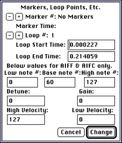
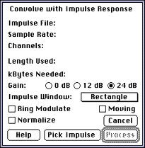
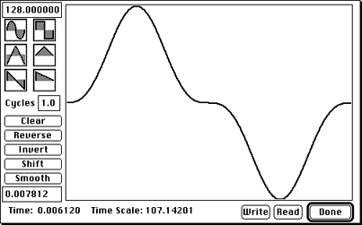
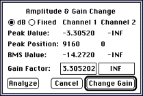
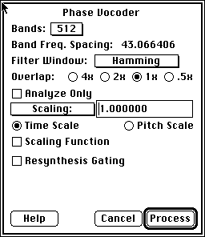
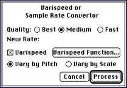

The commands in the Hack menu start the sound file processing. Most of the
processes involve a lot of calculations, and take time. The focus of the
application has been on achieving useful and interesting processes, not on
speedy performance.
Header Change command
Use this command to change the sample rate, number of channels, and data
format of the open file. If you open a headerless file, use this dialog to
set file information before saving a copy.
Figure 2: Header change dialog.
Loops & Markers command
Use to modify the current sound file's header file, if there is one. The
dialog lets you:
modify the markers in the header file
modify a loop in the sound file
modify information in the header of a MIDI file that lets you use a
single MIDI channel for different sounds, not just different pitches

Figure 3: Loops and Markers dialog.
Note: Since SoundHack uses most of the available memory, your
Macintosh may appear to be frozen while processing. Have patience.
Binaural Filter
Lets you create a stereo file; that is, process a monaural sound file so
that the result puts the mono signal at a simulated position around the
head. SoundHack does this by using an HRTF (head related transfer
function) as a filter. There is a function for each position around the
head.
Selecting this command brings up a dialog.
Figure 4: Binaural Position Filter dialog.
Using the binaural filter
To use a binaural filter, follow these steps:
Enter the desired position in the Angle dialog box (in degrees)
or click one of the radio buttons on the outside of the position
wheel.
The position wheel shows the head of the listener, nose pointing
upward. Select the position based on that head
To normalize the output after computation-that is, bring it to the
loudest possible level-check the Normalize box.
Click Process.
SoundHack has filter functions for 12 positions around the head of the
listener, but if you enter an angle value between two positions, SoundHack
mixes the two filters on both sides of the selected value.
For more information
The binaural filters are sample rate conversions (for 44,100 samples per
second) of those used in the dissertation "Control of Auditory Distance"
by Durand Begault; those conversions are approximations of the averaged
monaural transfer functions shown in Blauert's Spatial Hearing.
Note: Binaural spacialization only works with headphones.
Convolution command
Convolution is the process of multiplying the spectra of two sound files,
creating a type of cross-synthesis, in which common frequencies are
reinforced. Convolution takes two sound files: an input file and an
impulse response file. It multiplies the spectra of the two files,
producing a new sound file. The sound is processed block by block, with
each block as large as the impulse response.

Figure 5: Convolution dialog.
The following Convolution options are available.
Length Used
Specifies how much of the impulse response file to use.
Kilobytes Needed To Process File
Estimate of the application memory size
to set for processing. For large impulse responses-above the default of
900-you must quit SoundHack and reset application memory size.
Filter Gain
SoundHack attempts to automatically scale the amplitude of
filter gain, but this value is impossible to predict. The Filter Gain
buttons control the amplitude of the filter gain. Select 24 dB for most
cases. Select one of the other options to avoid clipping if the input and
impulse response have similar spectra, since extreme resonances will
occur. If a clipped output still seems unavoidable, save the output in
NeXT floating point format, then use the Gain Change command from the Hack
menu to normalize it back to an integer format.
Normalize
Normalizes output after computation.
Ring Modulate
Performs a ring modulation (convolution in frequency)
between two sound files.
Impulse Window
Applies a selected envelope to the impulse before
convolution, resulting in smoother convolution. Desirable for a moving
impulse response convolution since the impulse response changes for every
block of samples processed. Especially true for a moving ring modulation.
A triangular window is best for smoothing; a rectangular window has no
effect.
Moving
Performs a moving impulse response convolution: A window moves
through the impulse response file, selecting a new impulse response after
every block of processing.
Set window size in the Length Used field. The window moves through the
impulse response file at a rate that ensures that the ends of the impulse
response file and the input file are reached simultaneously. If the
impulse response file is longer than the sound file, sections of the
impulse response file are skipped. It is a good idea to set Filter Gain to
Low if using the moving impulse-or to save the file in a floating point
format-because the scaling is fairly unpredictable.
Example for moving input convolution
With 10 second input file, a 5 second impulse response file, and Length
Used set to 1.0 for 1-second impulse response windows, the process looks
like the figure below:

Figure 6: Example for moving convolution.
The first 1.0-second frame of the input file (A) is convolved with the
first 1.0-second frame of the impulse response file (ab).
The window on the input file is moved 1.0 second forward to B, but the
window on the impulse response file is moved only 0.5 seconds to bc. Both
files will finish at the same time. Actually, the impulse response file
reaches the end first and the last impulse response is zero-padded.
Gain Change command
Allows scaling the gain/amplitude of a sound file.

Figure 7: Gain change dialog.
Equivalent functions in Sound Designer II and Alchemy are faster, and you
may prefer to use them. However, SoundHack provides an RMS value for the
file, and allows a different gain factor for each channel. It also works
on floating point and \xb5 Law files.
Use Gain Change to do the following:
Click on Analyze to calculate the peak value, peak position (in
samples), and RMS values. The gain factors are set to normalize both
channels independently.
Click on Change Gain to create a new file adjusted by the gain factors
set. In a monaural file, only the channel 1 information is applicable.
Phase Vocoder command
Lets you change pitch without changing the length of the sound file or
change length without changing pitch.
SoundHack extracts amplitude and phase information for 16-8192 frequency
bands with a bank of filters. If time stretching is desired, these phase
and amplitude envelopes are lengthened (or shortened, for time
compression), and then given to a bank of oscillators with frequencies
corresponding to the filters. For pitch shifting, the envelopes are
untouched, and given to a bank of oscillators with frequencies related by
the pitch ratio.

Figure 8: Phase Vocoder dialog
The following Phase Vocoder dialog options are available.
Bands
Set Bands to the number of filter-oscillator pairs to use. A large
number of bands gives better frequency resolution; a small number gives
better time resolution.
Filter Window
Lets you choose different pre-FFT (Fast Fourier Transform)
windows for different filtering characteristics.
Overlap
Adjusts the size of the filter window (relative to the number of
filter bands) for analysis and synthesis and thus the sharpness of the
filter. A large setting (4x) gives the sharpest filter. A sharper filter
differentiates better between frequencies that are between bands, but
responds more slowly to amplitude changes.
Scaling
Type the scale factor in the Scaling box. Click on the scaling
pop-up menu to specify time scaling by the length desired, or pitch
scaling by equal-tempered semitones.
Time Scale
Click the Time Scale button if you want time scaling.
Pitch Scale
Click the Pitch Scale button for pitch scaling.
Analyze Only
Creates a Csound compatible pvoc analysis files.
Scaling Function
To change the time expansion factor or the pitch
transposition factor during processing, click the Scaling Function box,
then select the Edit Function button that appears. Using the Edit Function
dialog is described below.
Resynthesis Gating
Resynthesis gating refers to how much of a sound the
Phase Vocoder reconstitutes. It works by breaking a sound down into
component sine waves, altering the sine waves in particular ways, and
recombining them into a new sound. This is called "resynthesis." Checking
Resynthesis Gating lets you set Minimum Amplitude and amplitude Threshold
Under Maximum, to tell the Phase Vocoder not to try to resynthesize parts
of the sound that would be inaudible in the final product anyway. This way
processing takes less time because it skips resynthesizing sounds below
the amplitude you specify.
Using the Edit Function dialog
Use the Edit Function dialog to create control functions. You can draw in
the function window; set upper and lower limits for the function; clear,
invert, reverse, smooth, or shift the function; or use simple waveforms
(up to 100 cycles) as a control function. There is no facility for
selecting, copying, pasting, or cutting.
If the Time Scale button is turned on the Edit Function dialog shows the
range of the vertical axis in the top-left box and of the horizontal axis
in the bottom-left. With the Pitch Scale button on, the boxes show the
maximum and minimum pitch range. The Time Scale Edit Function dialog
indicates a wave's time scale; the Pitch Scale Edit Function dialog
indicates semitones.
The next set of boxes represent default scaling functions, which can be
modified by drawing or clicking with the mouse in the editing window.
Also, double-clicking on a function applies it to what's currently in the
editing window.
The command buttons below offer the following functions:
Clear-Returns to the default, a flat horizontal line
Reverse-Flips the waveform horizontally
Invert-Flips the waveform vertically
Shift-Executes a phase shift according to a number (0-399) you specify
Smooth-Smooths the waveform very slightly
After making selections and adjustments in the Edit Function dialog, click
Done and then click Process in the Phase Vocoder dialog. An Output
Waveform dialog shows the wave being processed. When processing stops you
can play the sound.
Figure 9: Edit Function dialog.
Spectral Dynamics command
Performs standard dynamics processing (gating, ducking, expansion,
compression) on each spectral band individually. It has individual
threshold detection for each band, so that the dynamics process can be
active in one band while inactive in another.
The process can be limited to affect only a specific frequency range by
use of a threshold. You can decide to affect only sounds that are above
the threshold or sounds that are below it. The threshold level can be set
to one value for all bands, or it to a different value for each band by
reading in and analyzing a sound file. This sound file's amplitude
spectrum is used for the thresholds for each band. This is especially
useful if there is a sound you want to emphasize or deemphasize.
When you choose the command, the Spectral Dynamics Processor dialog
appears:
Figure 10: Spectral Dynamics Processor dialog.
The Spectral Dynamics Processor dialog offers the following options:.
Gate-Duck pop-up
Lets you select the type of process to use.
Bands pop-up
Sets the number of filter bands into which to separate the
sound. 512 is a good compromise for the number of bands at a 44,100 sample
rate as each band is about 43 Hz apart and the filters used have a
(512*2)/44,100- or.023-second delay. This is a pretty good frequency
resolution (if no partials are closer than 43 Hz) without too much time
smearing.
Highest Band /Lowest Band
Limits the frequency range affected.
Gain/Reduction
Sets the amount of gain or reduction for the bands which
are past the threshold. For compression and expansion, this box becomes
the ratio. The compressor and expander hold the highest level steady and
affect lower levels (also known as "downward" expansion or compression).
Threshold Level
Sets the threshold level.
Varispeed command
As a sample rate converter, SoundHack is slower and possibly less accurate
than Sound Designer II or Alchemy, so this function may be superfluous to
users who own that software. What SoundHack has, however, is a variable
sample rate conversion utility (varispeed).
Choose Varispeed under the Hack menu and check Varispeed in the dialog
that appears. This brings up the Edit Function dialog that also appears
when Pitch Scale is turned on in the Phase Vocoder dialog (described
above), and lets you manipulate a waveform to vary the rate over the
length of the sound sample in the same way you modified the pitch scale
with Phase Vocoder.

Figure 11: Varispeed dialog.
The following Varispeed dialog options are available.
Quality
The Quality buttons control the size of the smoothing filter
used, and the resultant quality of interpolation/decimation.
Varispeed box
Click the Varispeed box to enable the Varispeed feature.
Varispeed Function
Clicking the Varispeed Function button displays the
Edit Function dialog, giving you control over a 10-octave varispeed.
Vary by Pitch/Vary by Scale
The Vary by Pitch and Vary by Scale buttons
allow you to draw a curve for either pitch or scaling factor.